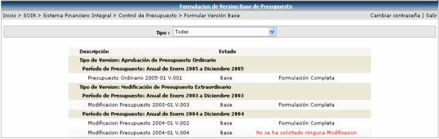
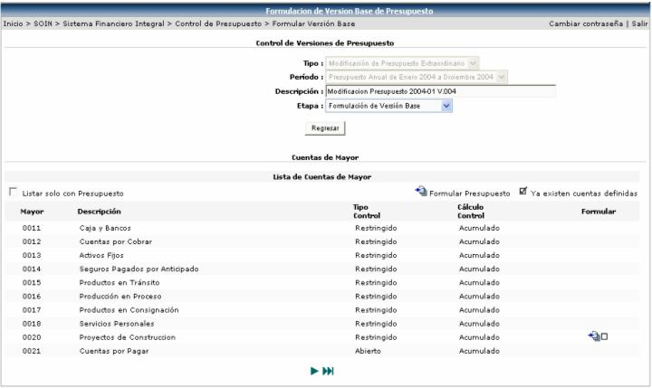
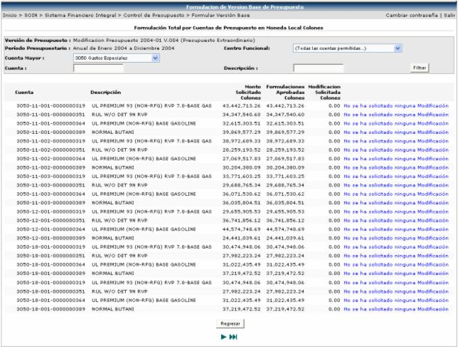
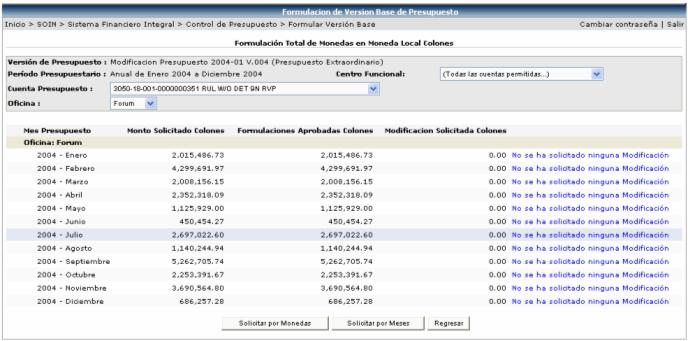
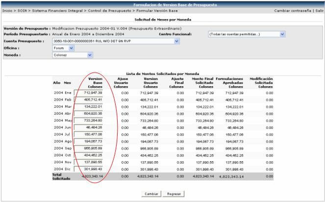

En esta opción se listarán todas aquellas versiones creadas en la opción Versiones de Formulación de Presupuesto, que tengan asociada la etapa Base.

Al seleccionar una formulación de presupuesto, se desplegará la siguiente pantalla donde se podrá modificar los montos a solicitados:

Para ello se debe de seleccionar una cuenta de mayor y a continuación se desplegará la lista de cuentas de presupuesto para proceder a cambiar los montos:

Una vez en esta pantalla, se selecciona la cuenta a modificar y se presenta la pantalla donde se puede escoger, si hacer la modificación por moneda o por meses:

La columna que se cambiará será la de Versión Base, ya sea aumentando o rebajando el monto solicitado:
